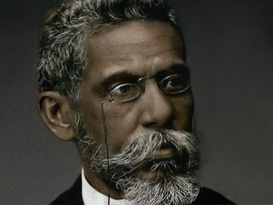

1839-1908
Machado de Assis
Joaquim Maria Machado de Assis foi um dos maiores escritores brasileiros e fundador da Academia Brasileira de Letras. Sua obra combina ironia, análise psicológica e crítica social com uma precisão rara.
Obras essenciais: Memórias Póstumas de Brás Cubas e Dom Casmurro.
“Não tive filhos, não transmiti a nenhuma criatura o legado da nossa miséria.”